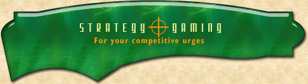

|  | ||
| ||
|
Skotos’ Strategy Games allow you to engage in battles of wits with opponents from all of the world. Long-term games like Galactic Emperor: Hegemony allow for month-long campaigns, while short-term games like Gang of Four allow for an evening's entertainment. [ Skotos Games | Prose | Online Strategy | iPhone Card Games ] |
||